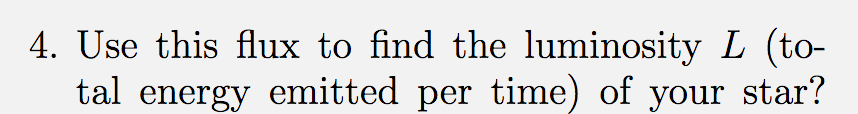

Forrige side🙂 🙁
Fluks og luminositet
La oss se på oppgaveteksten til oppgave 1D.3 (prosjektstudenter har et liknende problem i utfordring B i del 3). Vi begynner rett på 4. deloppgave, anta at du ser på sola og fluksen F som sola stråler ut er kjent fra Stefan-Boltzmanns lov, F = σT4, denne har du kanskje sett før, men vi skal komme nærmere inn på denne senere. Det viktigste nå er at F er et kjent tall, det samme er radiusen til sola. 
Du skal altså ikke bruke tall nå, kun diskutere hvordan du vil løse oppgaven. Neste side